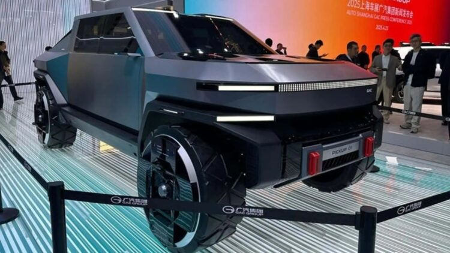

Elon musk spouse
Posted on June 2, 2025 | Category: Technology
Goodbye to Tesla’s dominance – China launches its own version of the Cybertruck with the new GAC Pickup 01 and promises to fight for market share globally

China just hit Musk. Not literally, of course, we’re not into violence here, but they did go straight for what hurts him the most. They’ve launched a pickup truck with a design that looks a bit (just a bit) like the famous and much-talked-about Cybertruck, and, to no one’s surprise, it’s already being called the “Chinese Cybertruck”.
It’s the GAC Pickup 01, a model that’s stirred up plenty of buzz both on and off social media. And while Tesla is facing serious problems selling its Cybertruck… in China, the copies are already rolling out to compete on a global scale.
This impressive pickup not only mimics the aggressive design of the Cybertruck, but also includes much more advanced technologies and even semi-autonomous driving… Sound familiar, Elon?
And although it’s still unclear whether it will be electric, hybrid, or combustion-powered, its architecture suggests it aims to match (or even surpass) its American inspiration.
Made in China
For decades, China only made copies of whatever hit the market, clothes, vehicles, phones, or jewellery, “Made in China” was always associated with knockoffs or poor quality, but that has changed.
Tech-Geo
Goodbye to Tesla’s dominance – China launches its own version of the Cybertruck with the new GAC Pickup 01 and promises to fight for market share globally
by tech GEO 05/29/2025 10:00
Goodbye to Tesla's dominance - China launches its own version of the Cybertruck with the new GAC Pickup 01 and promises to fight for market share globally
Goodbye to Tesla's dominance - China launches its own version of the Cybertruck with the new GAC Pickup 01 and promises to fight for market share globally
China just hit Musk. Not literally, of course, we’re not into violence here, but they did go straight for what hurts him the most. They’ve launched a pickup truck with a design that looks a bit (just a bit) like the famous and much-talked-about Cybertruck, and, to no one’s surprise, it’s already being called the “Chinese Cybertruck”.
It’s the GAC Pickup 01, a model that’s stirred up plenty of buzz both on and off social media. And while Tesla is facing serious problems selling its Cybertruck… in China, the copies are already rolling out to compete on a global scale.
This impressive pickup not only mimics the aggressive design of the Cybertruck, but also includes much more advanced technologies and even semi-autonomous driving… Sound familiar, Elon?
And although it’s still unclear whether it will be electric, hybrid, or combustion-powered, its architecture suggests it aims to match (or even surpass) its American inspiration.
Made in China
For decades, China only made copies of whatever hit the market, clothes, vehicles, phones, or jewellery, “Made in China” was always associated with knockoffs or poor quality, but that has changed.
In recent years, China has become one of the top competitors in every sector, and the automotive world is where it’s most clear that they’ve become fierce rivals. Now, they’ve blended past and present, and launched a pickup “inspired” by the Cybertruck, but with Chinese technology.
What does this Chinese Cybertruck offer? GAC, one of China’s biggest manufacturers, has now gone all in on a design that looks like it came out of a comic book. Pickup 01 features sharp angles, a metallic finish, and a smart interior with a panoramic central screen and a system that lets you slide the steering wheel from left to right.
Technology and design with a mocking tone
Even though the resemblance to the Cybertruck is obvious, the GAC Pickup 01 also reminds us of the GMC Hummer EV. The design looks like a mix of both, clearly aiming to break into the futuristic pickup segment, no shame attached. But let’s be honest, it feels a lot like those famous Terreneitors we used to play with as kids.
Electric motor? For now, GAC hasn’t revealed whether the Pickup 01 will be 100% electric, hybrid, or combustion-powered. What is known is that it’s built on the GAIA platform (GAC Adaptative Intelligent Architecture), which is ready to support different types of powertrains and semi-autonomous driving.
How much will it cost? The official launch in China is scheduled for 2027, but the brand has already confirmed export plans to markets like Mexico, Chile, Australia, and Saudi Arabia. No set date yet, but all signs point to the GAC Pickup 01 arriving in Latin America in under three years.
Although there are no official figures, estimates suggest a price between 50,000 and 70,000 dollars, putting it below the Cybertruck while offering a futuristic product at a lower cost. It’s a clear move: compete through design and technology with more aggressive pricing.
China’s on fire
In the first quarter of 2025 alone, China exported over 62,000 pickups, that’s 45% of its total production in that segment and a 31% growth compared to the previous year. GAC wants to ride that wave.
Meanwhile, things at Tesla aren’t going well with the Cybertruck. Poor sales, delivery delays, and high production costs have turned the model into a headache for Elon Musk.
Is the Cybertruck losing the battle?
Musk is facing one of his most stressful moments since announcing the model. It’s estimated that over 10,000 units are sitting around unsold, causing massive losses and all the while… China is laughing.
Can Tesla stand up to the Chinese copy?
Elon Musk hasn’t said anything yet about the GAC Pickup 01, but the resemblance is so obvious it’s hard to believe it hasn’t bothered him. In this soap opera, where the “evil twin” has just made her debut, the one who offers more for less might take the market.
The GAC Pickup 01 is more than a copy: it’s a challenge, and a direct one at that. China no longer